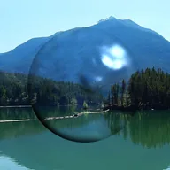

Omino Glas

Erzeugt Glas aus der Helligkeit der Ebene: Es bricht den Hintergrund mit Regenbogenrändern und beleuchtet die Oberfläche wie eine Linse.
Einstellungen
| Einstellung | Typ | Bereich | Standard |
|---|---|---|---|
| Abschrägung | Zahl | 0 px bis 300 px | 10 px |
| Lichtbrechung | Zahl | -100 px bis 100 px | 5 px |
| Chromatische Aberration | Zahl | -100 px bis 100 px | 5 px |
| Strukturgröße | Zahl | 5 bis 500 | 100 |
| Glättungs-Samples | Zahl | 1 bis 20 | 2 |
| Farbe | Farbe | – | #FF5566 |
| Überblendung | Zahl | 0% bis 100% | 0% |
| Schattierung | Auswahl | Keine, Punktlicht, Gerichtetes Licht | Punktlicht |
| Intensität | Zahl | 0% bis 200% | 100% |
| Glanz | Zahl | 0 bis 1 | 0.8 |
| Spiegelglanz | Zahl | 1 bis 250 | 30 |
| Umgebungslicht | Zahl | 0 bis 1 | 0.1 |
| Lichtfarbe | Farbe | – | #FFFFFF |
| Richtung | Punkt (X, Y) | -5000 px bis 5000 px | 75 px, -75 px |
| Höhenwinkel | Zahl | -100 bis 800 | 100 |
| Luminanz der Ebene verwenden | Ein oder aus | – | Ein |
| Rauheit | Zahl | -100% bis 100% | 0% |
| Rauheitsskalierung | Zahl | 0.01 bis 50 | 1 |
| Entwicklung | Zahl | -50 bis 50 | 0 |
| Zufallswert | Zahl | 0 bis 5 | 0 |